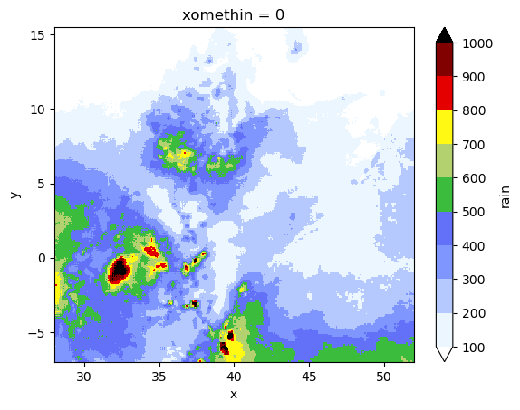
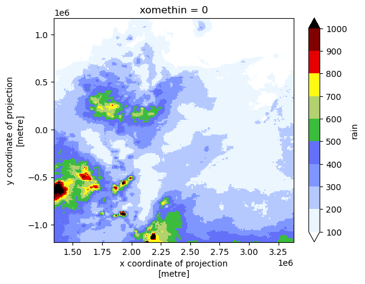
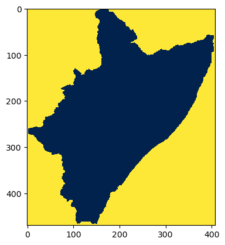
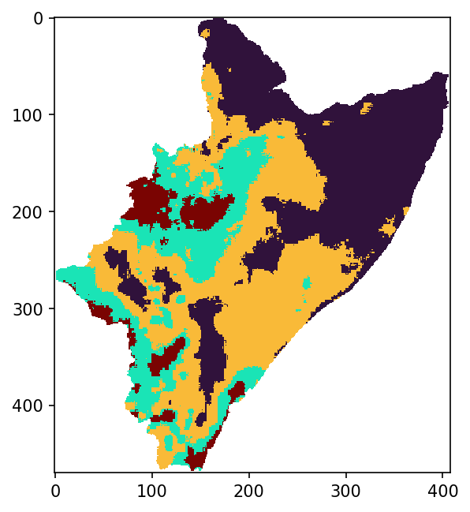
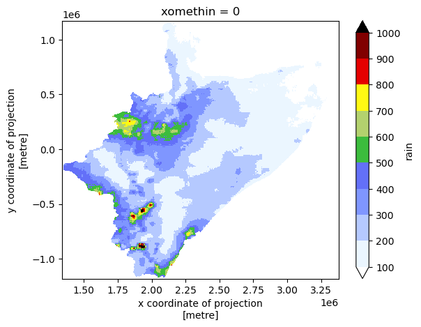
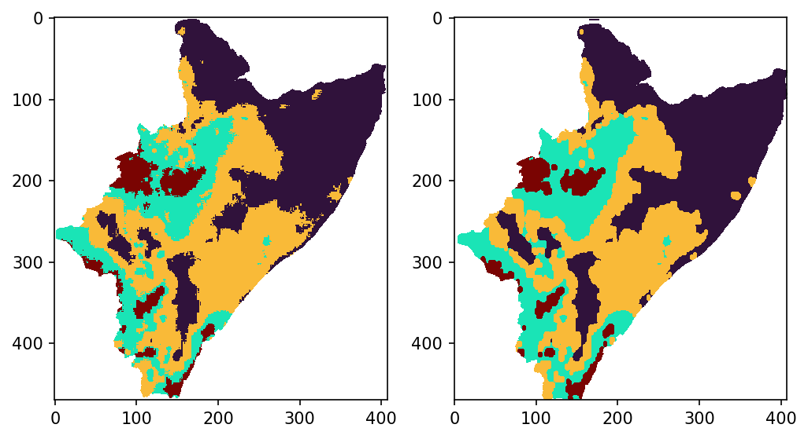
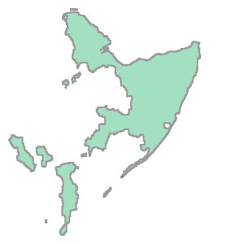
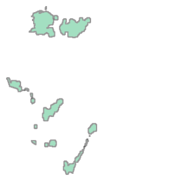
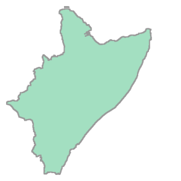

REGIONALIZING A REALIZATION
Objectives:
Manipulating and visualizing spatial data
Caveat: Most likely, future developments on STORM won’t demand reading a rainfall field as a seed for regionalization. Nevertheless, the exercise presented herewill still be applicable to some eventual parameterization procedure.
Reading and regionalizing the realization is done by STORM through the functions: EMPTY_MAP, READ_REALIZATION, KREGIONS, MORPHOPEN, and REGIONALISATION of the realization.py module.
STORM PARAMETERS
[1]:
RAIN_MAP = "../realisation_MAM_crs-OK.nc" # with interpretable CRS
SUBGROUP = ""
CLUSTERS = 4 # number of regions to split the whole.region into
# OGC-WKT for HAD [taken from https://epsg.io/42106]
WKT_OGC = (
'PROJCS["WGS84_/_Lambert_Azim_Mozambique",'
'GEOGCS["unknown",'
'DATUM["unknown",'
'SPHEROID["Normal Sphere (r=6370997)",6370997,0]],'
'PRIMEM["Greenwich",0,'
'AUTHORITY["EPSG","8901"]],'
'UNIT["degree",0.0174532925199433,'
'AUTHORITY["EPSG","9122"]]],'
'PROJECTION["Lambert_Azimuthal_Equal_Area"],'
'PARAMETER["latitude_of_center",5],'
'PARAMETER["longitude_of_center",20],'
'PARAMETER["false_easting",0],'
'PARAMETER["false_northing",0],'
'UNIT["metre",1,'
'AUTHORITY["EPSG","9001"]],'
'AXIS["Easting",EAST],'
'AXIS["Northing",NORTH],'
'AUTHORITY["EPSG","42106"]]'
)
READING SPATIAL DATA
[2]:
# loading libraries
import cmaps # -> nice color-palettes
import geopandas as gpd
import matplotlib.pyplot as plt
import numpy as np
import rioxarray as rio
import xarray as xr
from cmcrameri import cm as cmc
from pandas import RangeIndex
from rasterio.enums import Resampling
from rasterio.features import shapes
from skimage import morphology
from sklearn.cluster import KMeans
STORM must create a void Xarray, and append the local CRS (via rioxarray). But first, here we define firs some local coordinates.
[3]:
# this fast-tracks the generation (for this notebook) of coordinates
yyss = np.linspace(1167500.0, -1177500.0, 470, endpoint=True)
xxss = np.linspace(1342500.0, 3377500.0, 408, endpoint=True)
# check out the numpy.shapes
print(yyss.shape)
print(xxss.shape)
(470,)
(408,)
Now the “void” is created…
[4]:
# create an empty numpy
void = np.empty((len(yyss), len(xxss)))
void.fill(np.nan)
# create an empty xarray
void = xr.DataArray(
data=void,
dims=["y", "x"],
# name="void",
coords=dict(
y=(["y"], yyss),
x=(["x"], xxss),
),
attrs=dict(
_FillValue=np.nan,
units="mm",
),
)
# append the CRS
void.rio.write_crs(rio.crs.CRS(WKT_OGC), grid_mapping_name="spatial_ref", inplace=True)
# how does it look like?
print(void)
<xarray.DataArray (y: 470, x: 408)>
array([[nan, nan, nan, ..., nan, nan, nan],
[nan, nan, nan, ..., nan, nan, nan],
[nan, nan, nan, ..., nan, nan, nan],
...,
[nan, nan, nan, ..., nan, nan, nan],
[nan, nan, nan, ..., nan, nan, nan],
[nan, nan, nan, ..., nan, nan, nan]])
Coordinates:
* y (y) float64 1.168e+06 1.162e+06 ... -1.172e+06 -1.178e+06
* x (x) float64 1.342e+06 1.348e+06 ... 3.372e+06 3.378e+06
spatial_ref int32 0
Attributes:
_FillValue: nan
units: mm
[5]:
# check the CRS out
print(void.rio.crs)
PROJCS["WGS84_/_Lambert_Azim_Mozambique",GEOGCS["unknown",DATUM["unknown",SPHEROID["Normal Sphere (r=6370997)",6370997,0]],PRIMEM["Greenwich",0],UNIT["degree",0.0174532925199433]],PROJECTION["Lambert_Azimuthal_Equal_Area"],PARAMETER["latitude_of_center",5],PARAMETER["longitude_of_center",20],PARAMETER["false_easting",0],PARAMETER["false_northing",0],UNIT["metre",1],AXIS["Easting",EAST],AXIS["Northing",NORTH],AUTHORITY["EPSG","42106"]]
Read the realization (previously computed, and stored as NetCDF).
[6]:
# read the netcdf file (via rioxarray)
xile = rio.open_rasterio(RAIN_MAP, group=SUBGROUP)
# REMOVING the annoying BAND dimension (assuming we only have ONE band!)
if "band" in list(xile.dims):
for x in list(xile.data_vars):
# https://stackoverflow.com/a/41836191/5885810
xile[x] = xile[x].sel(band=1, drop=True)
xile = xile.drop_dims(drop_dims="band")
# look up for the CRS?
xvar = xile.rio.grid_mapping
# actual crs
xcrs = xile.rio.crs
# # trasform4fun
# xtra = xile.rio.transform()
xile.close()
# how does the realization look like?
print(xile)
<xarray.Dataset>
Dimensions: (x: 480, y: 450)
Coordinates:
* x (x) float64 28.02 28.07 28.12 28.17 ... 51.82 51.87 51.92 51.97
* y (y) float64 15.48 15.43 15.38 15.33 ... -6.875 -6.925 -6.975
xomethin int32 0
Data variables:
rain (y, x) float32 ...
mask (y, x) uint8 ...
[7]:
void.rio.crs.to_string() != xcrs.to_string()
[7]:
True
First, some dimension-compatibility must be set up.
[8]:
# xcrs.is_geographic
# renaming coordinates for 'easy' reprojection?
# https://www.geeksforgeeks.org/python-get-dictionary-keys-as-a-list/
c_xoid = list(void.coords.dims)
# ['y', 'x']
# ['lat', 'lon']
c_xile = list(xile.coords.dims)
# ['lat', 'lon']
# ['band', 'x', 'y']
# https://stackoverflow.com/a/176921/5885810
c_ids = list(map(lambda i: c_xile.index(i), c_xoid))
# assuming LAT goes first
# https://www.geeksforgeeks.org/python-convert-two-lists-into-a-dictionary/
# https://stackoverflow.com/a/56163051/5885810 -> rename coordinates
# https://stackoverflow.com/a/51988240/5885810 -> slicing lists
xile = xile.set_index(
indexes=dict(zip(list(map(c_xile.__getitem__, c_ids)), c_xoid)),
)
# # the line below gives WARNING
# xile = xile.rename(
# dict(map(lambda i, j: (i, j), list(map(c_xile.__getitem__, c_ids)), c_xoid))
# )
print(xile)
<xarray.Dataset>
Dimensions: (x: 480, y: 450)
Coordinates:
* x (x) float64 28.02 28.07 28.12 28.17 ... 51.82 51.87 51.92 51.97
* y (y) float64 15.48 15.43 15.38 15.33 ... -6.875 -6.925 -6.975
xomethin int32 0
Data variables:
rain (y, x) float32 ...
mask (y, x) uint8 ...
Then, the re-projection can be done.
[9]:
# reprojection happens here
pile = xile.rio.reproject_match(void, resampling=Resampling.nearest)
# how does it look like?
print(pile)
<xarray.Dataset>
Dimensions: (x: 408, y: 470)
Coordinates:
* x (x) float64 1.342e+06 1.348e+06 1.352e+06 ... 3.372e+06 3.378e+06
* y (y) float64 1.168e+06 1.162e+06 ... -1.172e+06 -1.178e+06
xomethin int32 0
Data variables:
rain (y, x) float32 8.853 12.19 12.01 14.22 ... 527.5 527.5 526.5 526.5
mask (y, x) uint8 1 1 1 1 1 1 1 1 1 1 1 1 1 ... 0 0 0 0 0 0 0 0 0 0 0 0
[10]:
# check the CRS-mapping
pile.rio.grid_mapping
[10]:
'xomethin'
[11]:
# ...and the actual crs
pile.rio.crs
[11]:
CRS.from_wkt('PROJCS["WGS84_/_Lambert_Azim_Mozambique",GEOGCS["unknown",DATUM["unknown",SPHEROID["Normal Sphere (r=6370997)",6370997,0]],PRIMEM["Greenwich",0],UNIT["degree",0.0174532925199433]],PROJECTION["Lambert_Azimuthal_Equal_Area"],PARAMETER["latitude_of_center",5],PARAMETER["longitude_of_center",20],PARAMETER["false_easting",0],PARAMETER["false_northing",0],UNIT["metre",1],AXIS["Easting",EAST],AXIS["Northing",NORTH],AUTHORITY["EPSG","42106"]]')
DATA-EXPORTING: THE WRONG WAY!
Please, do yourself a favor, and avoid exporting/storing outputs in this way; especially, if saving space is what you’re after.
Note: Check notebook fiv_ for a better and very optimal way of storing data into NetCDF format.
Do run the following block!. (ouputs will serve later as comparison cases)
[12]:
# please don't do this:
pile.to_netcdf("for_wrong-1.nc", mode="w")
# or this:
pile.to_netcdf(
"for_wrong-2.nc",
mode="w",
encoding={
"rain": {"dtype": "f4", "zlib": True, "complevel": 9},
"mask": {"dtype": "u1"},
},
)
VISUALIZATION
Haven’t you checked out this awesome link yet?
{kind=link}
[13]:
# importing cool (but maybe color-blindly wrong) color-palettes
cmaps.precip2_17lev
[13]:

Assuming that rain is the variable we want to plot… [Both plots are done via xarray]
[14]:
# realization in WGS84
xile.rain.plot(
cmap="precip2_17lev",
levels=10,
vmin=100,
vmax=1000,
add_colorbar=True, # robust=True,
)
[14]:
<matplotlib.collections.QuadMesh at 0x21140db4370>

[15]:
# realization in local CRS
pile.rain.plot(
cmap="precip2_17lev",
levels=10,
vmin=100,
vmax=1000,
add_colorbar=True, # robust=True,
)
[15]:
<matplotlib.collections.QuadMesh at 0x21140ff3370>

REGIONALIZATION
[16]:
# reading the previously xported.numpy
CATCHMENT_MASK = np.load("tre_catchment-mask.npy")
# how does it look like?
plt.imshow(
CATCHMENT_MASK, origin="upper", cmap="cividis_r", interpolation="none"
) # .resampled(3))
[16]:
<matplotlib.image.AxesImage at 0x21140f1fb80>

Let’s mask the pixels not representing the catchment/region out.
[17]:
# # FOR A MASK IN THE WHOLE [RECTANGULAR] DOMAIN USE:
# mask_regn = np.ma.MaskedArray( pile.rain.data.copy(), False )
# FOR A MASK COMING FROM AN IRREGULAR DOMAIN/SHP USE:
mask_regn = np.ma.MaskedArray(pile.rain.data.copy(), ~CATCHMENT_MASK.astype("bool"))
# # ... in the line below (previous cases) BAND was removed!
# mask_regn = np.ma.MaskedArray(
# real.rain["band" == 1, :].data.copy(), ~CATCHMENT_MASK.astype("bool")
# )
# let's have a look
print(mask_regn)
[[-- -- -- ... -- -- --]
[-- -- -- ... -- -- --]
[-- -- -- ... -- -- --]
...
[-- -- -- ... -- -- --]
[-- -- -- ... -- -- --]
[-- -- -- ... -- -- --]]
The masking seems to be OK.
(MORE) STORM PARAMETERS
Having this CLUSTERS parameter here is very handy (for some toying later) .
[18]:
# number of regions to split the whole.region into
CLUSTERS = 4
# make a copy of the MASK and CLUSTERS
REG = mask_regn.copy()
N_C = CLUSTERS
Here we use some Machine Learning technique (i.e., K-means) from the scikit-learn library… to divide our realization into more “uniform” regions/zones.
[19]:
# nans outside mask
REG[REG.mask] = np.nan
# ravel and indexing
ravl = REG.ravel()
idrs = np.arange(len(ravl))[~np.isnan(ravl)]
# transform the non-void (RGB?) field into 1D.numpy
X = ravl[idrs].data.reshape(-1, 1)
# clustering happens here
kmeans = KMeans(n_clusters=N_C, n_init=11, random_state=None).fit(X)
# expand the result into a void-array
ravl[idrs] = kmeans.labels_
LAB = ravl.reshape(REG.shape).data
# region labels
KAT = np.char.strip(kmeans.get_feature_names_out().astype("U"), "kmeans")
# https://stackoverflow.com/a/25715954/5885810 -> np.object to np.string
# https://www.w3resource.com/numpy/string-operations/strip.php -> strip np.string.arrays
[20]:
# can we see the regionalization in the numpy array?
print(LAB)
print(KAT)
[[nan nan nan ... nan nan nan]
[nan nan nan ... nan nan nan]
[nan nan nan ... nan nan nan]
...
[nan nan nan ... nan nan nan]
[nan nan nan ... nan nan nan]
[nan nan nan ... nan nan nan]]
['0' '1' '2' '3']
VISUALIZATION
We can definitely see the regionalization by plotting the LAB numpy.
[21]:
plt.figure(figsize=(5, 5), dpi=150)
plt.imshow(LAB, origin="upper", cmap="turbo", interpolation="none") # .resampled(3))
# # use these for exporting and cleaning
# plt.savefig(
# "for_.pdf", bbox_inches="tight", pad_inches=0.02, facecolor=fig.get_facecolor()
# )
# plt.close()
# plt.clf()
[21]:
<matplotlib.image.AxesImage at 0x21140ed5bb0>

What are the actual means of the regions/classes?
[22]:
cdic = dict(zip(KAT, kmeans.cluster_centers_))
cdic
[22]:
{'0': array([120.833336], dtype=float32),
'1': array([367.94604], dtype=float32),
'2': array([230.80005], dtype=float32),
'3': array([575.4106], dtype=float32)}
Plot the realization (xarray pile) in local CRS, but this time only for the catchment/region mask.
[23]:
# masked realization in local CRS
pile.rain.where(~np.isnan(REG.data), np.nan).plot(
cmap="precip2_17lev", levels=10, vmin=100, vmax=1000, add_colorbar=True
)
[23]:
<matplotlib.collections.QuadMesh at 0x211439578b0>

MORPHOLOGICAL FILTERING
Maybe there is not need to have a detailed delimitation among the region/zones. Such a detail might translate in slowing STORM computations by having SHPs with too many points. Hence, decreasing the resolution of the boundaries will speed STORM’s performance (by having SHPs with much less vertices/points).
Note: Following this approach implies that the actual means won’t precisely correspond to the newly delimited regions.
[24]:
# "decreasing resolution"
new = morphology.opening(LAB, morphology.ellipse(2, 3))
# plots and comparison
fig, ax = plt.subplots(1, 2, figsize=(8, 5), dpi=150)
ax[0].imshow(LAB, origin="upper", cmap="turbo", interpolation="none")
ax[1].imshow(new, origin="upper", cmap="turbo", interpolation="none")
[24]:
<matplotlib.image.AxesImage at 0x21143a107c0>

REGIONALIZATION MASKS TO NUMPYs
Such a conversion is necessary for STORM to simulate storms within such regions/masks.
[25]:
# copy the masks
mopen = new
# mopen = LAB
# NUMPY to SHAPE
# .rio.transform() IS QUITE OF THE ESSENCE HERE!
lopen = list(
shapes(mopen, mask=CATCHMENT_MASK, connectivity=4, transform=pile.rio.transform())
)
# we didn't read "BUFFRX_MASK" though!
# lopen = list( shapes(mopen, mask=BUFFRX_MASK, connectivity=4, transform=real.rio.transform()) )
# remove NAN.regions??
# https://stackoverflow.com/a/25050572/5885810
# https://stackoverflow.com/a/3179137/5885810
lopen = [x for x, y in zip(lopen, ~np.isnan(list(zip(*lopen))[-1])) if y]
lopen = list(
map(
lambda x: dict(
geometry=x[0],
properties={
"label": f"region{int(x[-1])}",
},
),
lopen,
)
)
# into GEOPANDAS
feats = gpd.GeoDataFrame.from_features({"type": "FeatureCollection", "features": lopen})
# # the line below is an alternative... BUT you mig have troubles grouping it
# feats = gpd.GeoDataFrame.from_dict(
# list(
# shapes(mopen, mask=BUFFRX_MASK, connectivity=4, transform=real.rio.transform())
# ),
# )
# grouping to retrieve just the CLUSTER.masks (the output is a Series)
nasks = feats.groupby(by="label").apply(lambda x: x.unary_union)
Visualizing the different masks/regions…
[26]:
nasks[0]
[26]:

[27]:
nasks[-1]
[27]:

[28]:
# do we obtain HAD if merging all masks?
feats.unary_union
[28]:

If you want to have them grouped into a GeoPandas.
[29]:
# turn them back into GeoPandas
masks = gpd.GeoDataFrame(geometry=nasks)
# masks.geometry.iloc[0]
# masks.geometry.loc['region0']
# masks.loc['region0'].geometry
# masks.geometry.xs('region0')
masks
[29]:
| geometry | |
|---|---|
| label | |
| region0 | MULTIPOLYGON (((1930000.000 -830000.000, 19300... |
| region1 | MULTIPOLYGON (((1950000.000 -1070000.000, 1955... |
| region2 | MULTIPOLYGON (((1935000.000 -985000.000, 19300... |
| region3 | MULTIPOLYGON (((1880000.000 -915000.000, 18750... |
I’d would ask then… what would the above exercise look like if CLUSTERS is equal to 1… or 3… or 7??
A PEEK INTO WHAT IT’S PASSED TO STORM
[30]:
real = pile.copy(deep=True)
# https://realpython.com/iterate-through-dictionary-python/
for keys, values in dict(
zip(
["catchm", "cacth", "kmeans", "region"],
[CATCHMENT_MASK, CATCHMENT_MASK, LAB, mopen],
)
).items():
real[keys] = xr.DataArray(values, coords=void.coords, dims=void.coords.dims)
# real[keys] = xr.DataArray(values, coords=real.coords, dims=real.coords.dims)
# trims "real['region']"
# trimming around the CATCHMENT_MASK is what we want; as we compute PTOT within "catchm"
real["region"] = xr.where(real.catchm == 1, real.region, -1)
# # -trims around the BUFFER -> (this we want NOT!)
# real["region"] = xr.where(real.buffer == 1, real.region, -1)
# -THESE 3 vars ARE IN THE ORDER OF cdic.keys()
# new means (regions inside the HAD)
# old_ks = list(
# map(lambda x: real.rain.where(real.kmeans == int(x)).mean().data, cdic.keys())
# )
new_ks = list(
map(
lambda x: real.rain.where(real.catchm == 1, np.nan)
.where(real.kmeans == int(x))
.mean()
.data,
cdic.keys(),
)
)
# numpy masks
# ... 1st transform K-mean into 1s (because of the 0 K-mean); and the assign 0 everywhere else
reg_np = list(
map(
lambda x: real.region.where(real.region != int(x), 1)
.where(real.region == int(x), 0)
.data.astype("u1"),
cdic.keys(),
)
)
# shapes
# # the line below are "pandas.core.series.Series"
# zhapez = list(map(lambda x: masks.loc[f"region{int(x)}"], cdic.keys()))
# ...in case "pandas.core.series.Series" try converting them into "geopandas.geodataframe.GeoDataFrame"
zhapez = list(
map(
lambda x: gpd.GeoDataFrame(
geometry=masks.loc[f"region{int(x)}"], crs=void.rio.crs
).set_index(RangeIndex(0, 1, 1)),
cdic.keys(),
)
)
# zhapez = list(
# map(
# lambda x: gpd.GeoDataFrame(geometry=masks.loc[f"region{int(x)}"]).set_index(
# RangeIndex(0, 1, 1)
# ),
# cdic.keys(),
# )
# )
# grouping the output into a dict
output = dict(zip(("mask", "npma", "rain"), (zhapez, reg_np, new_ks)))
output["kmeans"] = xr.where(real.catchm == 1, real.kmeans, -1).data.astype("i1")
output
[30]:
{'mask': [ geometry
0 MULTIPOLYGON (((1930000.000 -830000.000, 19300...,
geometry
0 MULTIPOLYGON (((1950000.000 -1070000.000, 1955...,
geometry
0 MULTIPOLYGON (((1935000.000 -985000.000, 19300...,
geometry
0 MULTIPOLYGON (((1880000.000 -915000.000, 18750...],
'npma': [array([[0, 0, 0, ..., 0, 0, 0],
[0, 0, 0, ..., 0, 0, 0],
[0, 0, 0, ..., 0, 0, 0],
...,
[0, 0, 0, ..., 0, 0, 0],
[0, 0, 0, ..., 0, 0, 0],
[0, 0, 0, ..., 0, 0, 0]], dtype=uint8),
array([[0, 0, 0, ..., 0, 0, 0],
[0, 0, 0, ..., 0, 0, 0],
[0, 0, 0, ..., 0, 0, 0],
...,
[0, 0, 0, ..., 0, 0, 0],
[0, 0, 0, ..., 0, 0, 0],
[0, 0, 0, ..., 0, 0, 0]], dtype=uint8),
array([[0, 0, 0, ..., 0, 0, 0],
[0, 0, 0, ..., 0, 0, 0],
[0, 0, 0, ..., 0, 0, 0],
...,
[0, 0, 0, ..., 0, 0, 0],
[0, 0, 0, ..., 0, 0, 0],
[0, 0, 0, ..., 0, 0, 0]], dtype=uint8),
array([[0, 0, 0, ..., 0, 0, 0],
[0, 0, 0, ..., 0, 0, 0],
[0, 0, 0, ..., 0, 0, 0],
...,
[0, 0, 0, ..., 0, 0, 0],
[0, 0, 0, ..., 0, 0, 0],
[0, 0, 0, ..., 0, 0, 0]], dtype=uint8)],
'rain': [array(120.87397, dtype=float32),
array(368.46494, dtype=float32),
array(231.04538, dtype=float32),
array(575.66113, dtype=float32)],
'kmeans': array([[-1, -1, -1, ..., -1, -1, -1],
[-1, -1, -1, ..., -1, -1, -1],
[-1, -1, -1, ..., -1, -1, -1],
...,
[-1, -1, -1, ..., -1, -1, -1],
[-1, -1, -1, ..., -1, -1, -1],
[-1, -1, -1, ..., -1, -1, -1]], dtype=int8)}